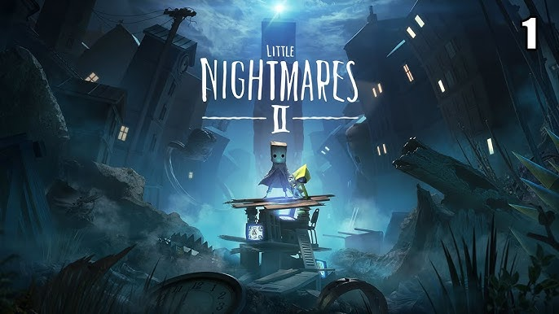

Little Nightmares II: Melangkah ke Kegelapan
Dipublikasikan Pada 13 Oktober 2024
Menyelami dunia gelap dan misterius dalam Little Nightmares II.
Little Nightmares II adalah permainan petualangan horor platform-teka-teki yang dikembangkan oleh Tarsier Studios dan diterbitkan oleh Bandai Namco Entertainment. Meskipun dapat dimainkan sebagai pengalaman yang berdiri sendiri, permainan ini melanjutkan kisah sebelumnya. Cerita mengikuti Mono, seorang anak yang harus bekerja sama dengan Six, protagonis dari permainan pertama, untuk bertahan dari kengerian Kota Pale dan mengungkap rahasia kelam yang mengancam mereka. Permainan ini dirilis pada 11 Februari 2021 untuk Google Stadia, Nintendo Switch, PlayStation 4, Windows, dan Xbox One, serta versi yang ditingkatkan, Little Nightmares II: Enhanced Edition, yang dirilis pada 25 Agustus 2021 untuk PlayStation 5, Windows, dan Xbox Series X/S.
Saat dirilis, game ini menerima ulasan positif dari kritikus yang memuji grafis, atmosfer, gameplay, dan suara, meskipun beberapa kritik muncul terkait kontrol dan gangguan teknis. Dalam waktu satu bulan setelah rilis, game ini telah terjual satu juta unit di seluruh dunia. Sekuelnya, Little Nightmares III, sedang dalam pengembangan oleh Supermassive dan dijadwalkan rilis sekitar tahun 2025.
Pergulangan Permainan
Little Nightmares II mempertahankan gaya permainan pendahulunya, dengan latar belakang dunia 2.5D. Pemain menjelajahi lingkungan yang gelap dan misterius, menghadapi tantangan berupa platforming dan teka-teki yang perlu dipecahkan untuk melanjutkan. Berbeda dengan game pertama, Mono tidak sepenuhnya tak berdaya; dia memiliki kemampuan untuk mengambil dan menggunakan item untuk menghancurkan objek atau melawan musuh yang lebih kecil. Namun, seperti Six, ia tetap harus mengandalkan stealth dan lingkungan untuk menghindari ancaman yang lebih besar.
Pemain juga dapat memanggil Six dan menggenggam tangannya untuk memastikan mereka tetap bersama. Kerja sama antara Mono dan Six menjadi kunci untuk memecahkan teka-teki dan menghindari atau mengalahkan musuh, termasuk situasi di mana mereka perlu menggunakan senjata jarak jauh. Game ini juga menawarkan koleksi topi dan sisa-sisa glitching, di mana mengumpulkan semua sisa-sisa tersebut akan membuka adegan tambahan.
Plot Cerita
Mono, seorang anak yang mengenakan kantong kertas di kepalanya, terbangun dari mimpi tentang sebuah pintu bertanda mata di ujung lorong. Ia melakukan perjalanan melalui Wilderness dan menemukan gubuk tua di mana ia membebaskan Six, yang ditangkap oleh Hunter, sosok bertopeng yang mengawasi tempat itu. Setelah mengalahkan Hunter, Mono dan Six melanjutkan perjalanan menggunakan pintu sebagai rakit, mengarungi badan air dan terdampar di Pale City, tempat yang dikelilingi kabut dan hujan, serta dipenuhi perangkat televisi kuno.
Sepanjang perjalanan, Mono berusaha memanfaatkan televisi sebagai portal untuk mencapai lorong dalam mimpinya. Namun, ia selalu ditarik kembali oleh Six sebelum dapat mencapai pintu tersebut. Di sepanjang jalan, ia menjumpai beberapa sisa-sisa hantu anak-anak dan gangguan yang dapat ia serap melalui interaksi.
Mono dan Six kemudian memasuki Sekolah, di mana mereka terpisah setelah Six ditangkap oleh para Pengganggu porselen, murid-murid gila di sekolah itu. Setelah menyelamatkan Six, mereka melarikan diri dari Guru berleher panjang. Di luar sekolah, Six menemukan jas hujan kuning khasnya. Mereka kemudian mencapai Rumah Sakit, di mana mereka bertemu dengan sosok mirip manekin dan Dokter yang merangkak di langit-langit. Mono berhasil memancing Dokter ke dalam insinerator dan memiliki pilihan untuk membunuhnya atau membiarkannya terjebak di sana.
Setelah keluar ke jantung Kota Pale, mereka melihat Menara Sinyal yang memancarkan Transmisi yang mengendalikan penduduk kota, yaitu Pemirsa yang terjebak dalam kecanduan televisi. Ketika Mono akhirnya mencapai pintu melalui televisi, pintu itu membuka jalan untuk Pria Kurus yang spektral. Setelah Mono ditarik keluar dari televisi, Pria Kurus muncul dan menangkap Six, meninggalkan bayangannya yang samar.
Dengan bayangan Six yang membawa Mono mendekati Menara Sinyal, Mono menyadari ia memiliki kekuatan serupa dengan Pria Kurus. Dalam pertempuran yang sengit, Mono berhasil menghancurkan Pria Kurus sebelum menarik Menara Sinyal ke arahnya.
Mono kemudian memasuki Menara Sinyal dan menemukan Six, yang telah berubah menjadi sosok raksasa yang terdistorsi. Meskipun awalnya bermusuhan setelah Mono merusak kotak musiknya, Mono berhasil mengembalikannya ke keadaan normal. Saat Menara Sinyal runtuh, mereka dikejar oleh massa daging dan mata yang membentuk intinya. Meski berlari dengan cepat, Six mengkhianati Mono dan membiarkannya jatuh ke jurang sebelum melarikan diri melalui portal televisi.
Sendirian dan dikelilingi oleh massa, Mono duduk pasrah dan menunggu nasibnya. Waktu berlalu, dan ia tumbuh menjadi sosok dewasa yang terpengaruh oleh Menara Sinyal, akhirnya berubah menjadi Pria Kurus. Kini, Mono yang telah dewasa duduk di ruangan di ujung lorong dalam mimpinya, dengan pintu yang tertutup.
Jika pemain berhasil mengumpulkan semua sisa-sisa glitching, adegan terakhir menunjukkan Six keluar dari portal televisi dan berhadapan dengan bayangannya sendiri, yang menunjuk ke pamflet yang mengiklankan Maw. Perut Six tiba-tiba keroncongan karena rasa lapar yang mendalam.
Perkembangan
Little Nightmares II pertama kali diumumkan di Gamescom 2019 sebagai sekuel dari game sebelumnya, dengan rencana rilis pada tahun 2020. Namun, peluncurannya ditunda karena pandemi COVID-19 dan juga karena butuh lebih banyak waktu untuk pengembangan. Demo permainan dirilis pada 30 Oktober 2020.
Pada 20 Februari 2021, Tarsier, yang diakuisisi oleh Embracer Group pada tahun 2019, mengumumkan bahwa mereka tidak akan melanjutkan pembuatan game Little Nightmares, tetapi penerbit Bandai Namco Entertainment menyatakan niat untuk melanjutkan waralaba di masa mendatang.
Menurut produser Lucas Rousell, tim pada awalnya mempertimbangkan untuk membuat game ini sebagai pengalaman co-op, namun ide tersebut segera dibatalkan demi kesesuaian cerita.